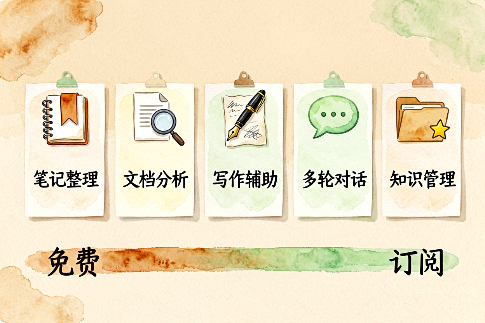
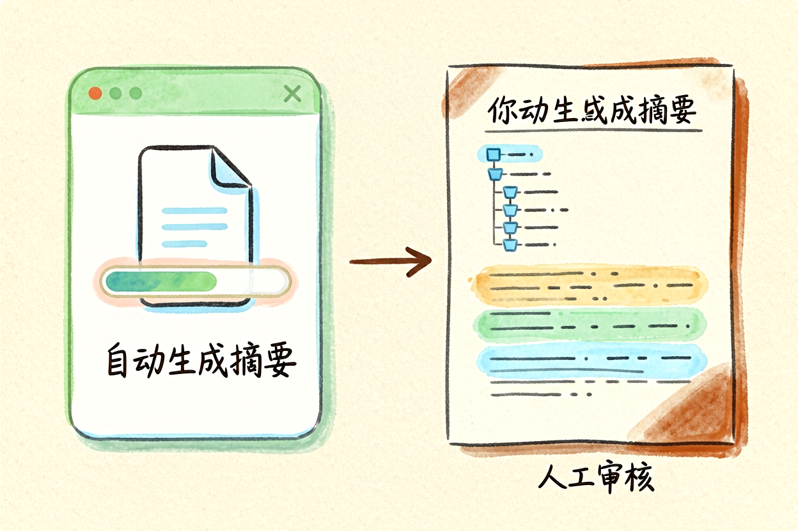
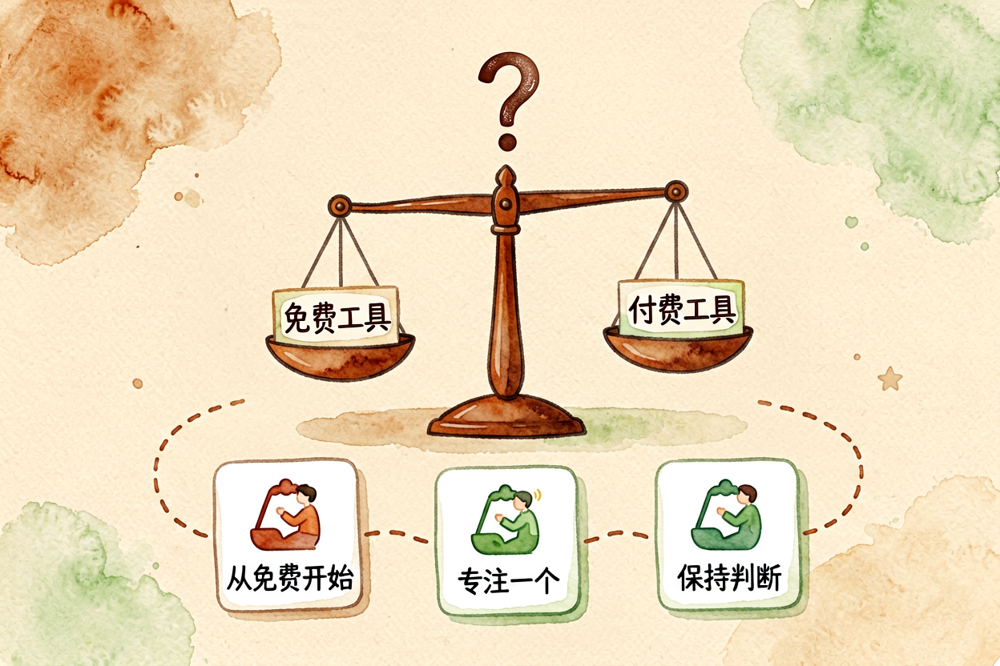
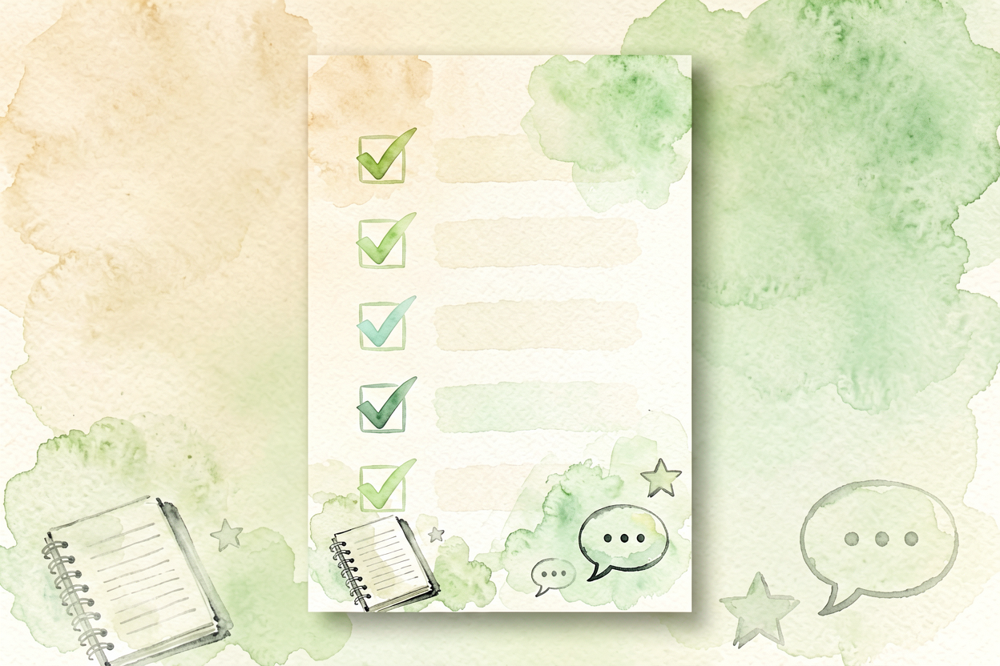

AI 学习辅助工具：学生党的效率神器指南
学习太累？用 AI 辅助，笔记整理、论文写作、语言学习、考试复习都能提效。本文精选5款免费工具，学生党照着用就行。
AI学习辅助工具是本文的核心主题，下面详细介绍学生党可用的效率神器。 !配图1学习辅助工具全景
{kind=link}
AI 学习辅助工具是什么：从笔记到考试的全面提效
AI 学习辅助工具，是用 AI 帮学生处理学习中的重复劳动：整理笔记、写论文、练口语、备考复习。工具分四类：笔记整理、论文写作、语言学习、考试复习。每类工具擅长不同，混着买套餐等于白花钱。
和AI 提升学习效率里讲的逻辑一致，本文聚焦具体工具推荐。学生党预算有限，优先选免费工具，够用就行。
第一款：笔记整理——Notion AI

Notion AI 是笔记整理领域的标杆，支持自动总结、提炼要点、生成大纲、跨页面关联。免费版每月 1000 词额度，足够日常使用。
使用技巧：先手动记录课堂笔记，再用 AI 总结提炼，别直接复制粘贴 AI 输出。AI 总结可能漏掉重点，手动补充更稳。
第二款：论文写作——ChatGPT + Grammarly

论文写作分两步：生成草稿和校对润色。ChatGPT 生成草稿，Grammarly 校对润色，组合使用效率最高。
和AI 论文阅读指南里讲的逻辑一致，先读后写，别从零生成。把论文丢给 ChatGPT，让它总结核心观点，再自己展开写作，更稳。
第三款：语言学习——Duolingo + ChatGPT
语言学习分两步：日常练习和情景对话。Duolingo 日常练习，ChatGPT 情景对话，组合使用效果最好。
和AI 英语口语练习里讲的逻辑一致，别只依赖工具，要主动开口。ChatGPT 对话时，要求自己用目标语言回答，别切回母语。
第四款：考试复习——Anki + Kimi

考试复习分两步：制作记忆卡片和模拟测试。Anki 制作记忆卡片，Kimi 模拟测试，组合使用效率最高。
和AI 备考指南里讲的逻辑一致，别只刷题不总结。用 Kimi 生成模拟测试题，再用 Anki 制作记忆卡片，反复复习。
第五款：时间管理——Notion + 滴答清单

时间管理分两步：任务规划和进度追踪。Notion 规划任务，滴答清单追踪进度，组合使用效率最高。
使用技巧：每周日晚上规划下周任务，每天早上的第一件事是更新进度。别只规划不执行，执行才是关键。
常见误区与避坑

误区一：过度依赖 AI AI 是工具，不是替代。别把作业、论文直接交给 AI 生成，要理解过程、掌握方法。
误区二：免费工具不够用就付费免费工具足够日常使用，付费之前先评估实际需求，别被营销忽悠。
误区三：工具装太多管理不过来工具是辅助，不是负担。选 2-3 款核心工具用熟，比装十个工具只会用其中一个强。
关于 AI 学习辅助工具，核心经验是「工具选对 + 流程跑通 + 主动思考」。别指望一键提效，AI 只是辅助，真正的效率提升来自你主动思考、动手实践。
AI 学习辅助工具的关键是动手试。别看完就忘，当天就选一款工具开始用，让操作成为习惯。用多了自然熟练。

补充：AI 学习辅助工具的详细功能可参考上文各场景说明。
补充：AI 学习辅助工具的详细功能可参考上文各场景说明。
掌握AI学习辅助工具的技巧，效率会翻倍。
本文信息核对于 2026-09-07。AI 产品的价格、免费额度与功能变动频繁，实际以各工具官网当前说明为准。